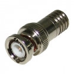
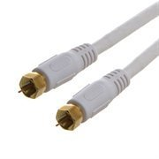
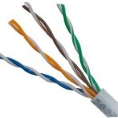
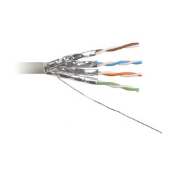

| BNC (a.k.a Bayonet) | F-Type |
|---|---|
|  |  |
| Push and twist | Screw in |
| Rating | Ohms | Use | Connector |
|---|---|---|---|
| RG-58 | 50 | Networking | BNC |
| RG-59 | 75 | Cable TV | F Type |
| RG-6 | 75 | Cable TV | T Type |
One cable contains one or more pairs of wires inside. Each pair is twisted like a strand of DNA Twisted pairs come with different types of shielding. The shielding types are indicated in the wire names.
Copper twisted cables use the Registered Jack (RJ) connectors.
The standards documents are put out by the Telecommunications Industry Association/Electronics Industries Alliance. This has been replaced by the ANSI/TIA 568C, but that’s not on the CompTIA Network+ exam.
The difference between the 568A and 568B standards is that the Green and Orange cables are switched. This is important because if one host is transmitting on green, the other host must be receiving on green (unless a switch or other network device switches the signal wires.)
Supports 2 twisted wire pairs.
But they are commonly called RJ-45, even on the CompTIA Network+ exam. Supports 4 twisted wire pairs.
This table shows the evolution of the Cat cables in terms of network speeds.
| Cat | Freq (MHz) | Max Bandwidth | 10BaseT | 100BaseT | 1000BaseT | 10GBaseT |
|---|---|---|---|---|---|---|
| 3 | 16 | 16 Mbps | ||||
| 4 | 20 | 20 Mbps | ||||
| 5 | 100 | 100 Mbps | 100m | in 4 pair | ||
| 5e | 100 | 1 Gbps | 100m | 100m | 100m | |
| 6 | 250 | 10 Gbps | 100m | 100m | 100m | 55m |
| 6a | 500 | 10 Gbps | 100m | 100m | 100m | 100m |
| 7 | 600 | 10+ Gbps | ||||
| 7a | 1000 | 100 Gbps | ||||
| 8 | 2000 | 40 Gbps |
CAT 7 introduces new connector types: GG45 and TERA.
Indicates wheather each wire pair is shielded or not
| Unshilded Twisted Pair (UTP) | Foil Twisted Pair (FTP) |
|---|---|
| Each wire pair is unshielded | Each wire pair is wrapped in foil |
|  |  |
In addition to the wire pair shielding, the entire cable can be shielded. The following
Available twisted pair cables:
| Cable | Pair Shielding | cable Shielding |
|---|---|---|
| F/UTP | none | foil |
| S/UTP | none | braided wire |
| SF/UTP | none | braided wire and foil |
| S/FTP | foil | braided wire |
| F/FTP | foil | foil |
| U/FTP | foil | none |
SMF is better over long distances because lasers have a uniform wave front. LEDs on the other hand shine in different directions and can cause the signal to disperse in the wire. As the light propagates components not orthogonal to field direction bounces more and travels farther.
| ST | single | snap twist | |
| SC | single | stick & click (push) | |
| MT-RJ | duplex | SFF | |
| LC | duplex | smaller than mtRJ | SFF |
-MT-RJ and LC are considered SFF
The shape and angle of the tip of a fiber-optic connector can have an impact on the performance of a fiber-optic communication link. The two basic types of fiber end are Ultra Physical Contact (UPC) and Angled Physical Contact (APC). In the UPC-type connector, the connector end is polished with no angle, while APC connectors feature a fiber end polished at an 8-degree angle. Besides additional labeling (UPC or APC) that helps in identifying further details about a given connector type, fiber-optic connectors can also have different colors. The rule of thumb is that a UPC-type connector typically would be blue while APC connector would have a green color.
Bidirectional: a fiber transceiver equipped with the capability to transmit and receive signals over a single fiber strand
AKA: Patch cable Used to connect a host to a network device like a switch or hub
A crossover cable reverses the sending and receiving cables on one end of the cable. Used to connect two hosts, since one the recieved signal on one host is the sent signal on the other host. One end is wired according to 568A and the other according to 568B. Modern switches auto detect and switch which wires are send and which wires are recieve, so this is a somewhat dated convention.
Automatically detects whether the required connection type is straight-through or crossover.
Notes on Computers
AWS · Bash · C · C++ · Cyber Security · Git · LaTeX · Linux · Networking · Python · Raspberry Pi · Tools · Vim
Notes on Math & Physics
Information Theory · Linear Algebra · Solid State Physics
Copyright 2021 · Eric D. Weise